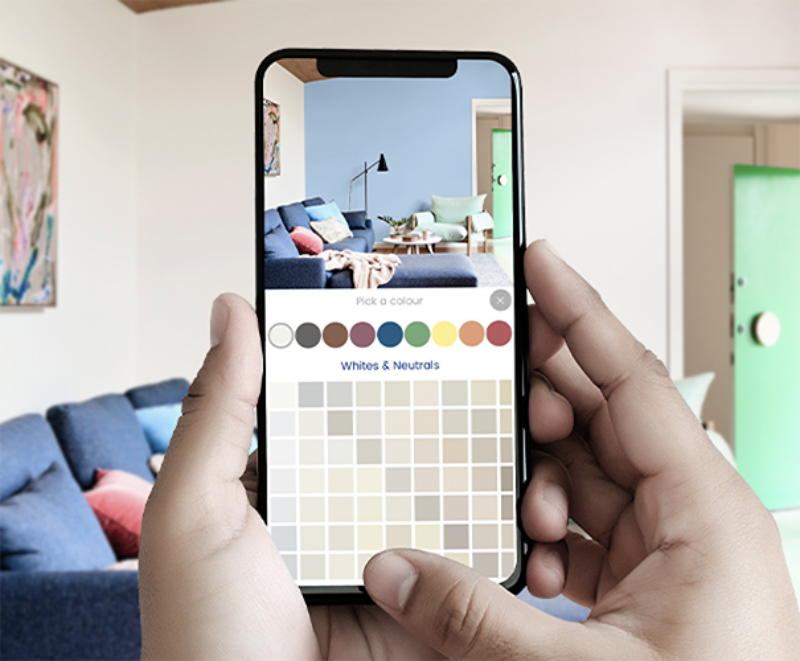
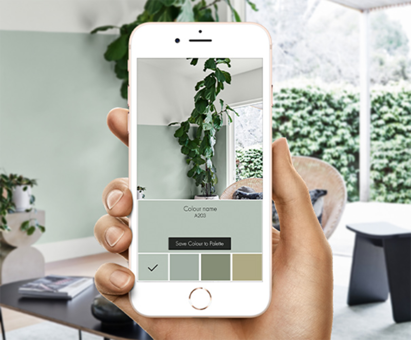
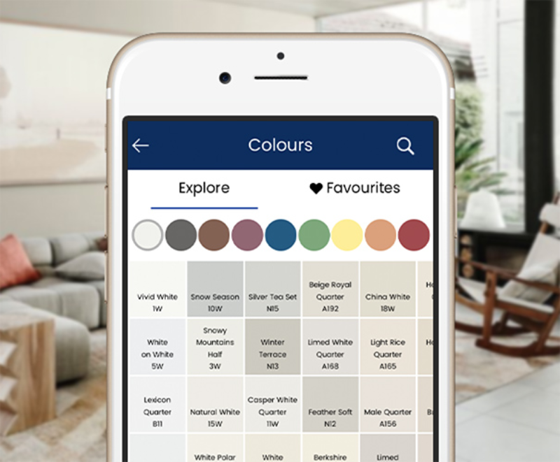

Visualise your colour
Select a photo of your room and use Zeenlux colour to virtually paint the area. This will give you an idea of what
the finished project will look like and help bring your paint project to life. You can get started with our
preloaded most popular colours palettes.
Remember to consider the lighting, avoid shadows and try to use natural light, this will play a big factor in
how the colours are displayed in your room.


Match your colour
Zeenlux Colour allows you to sample a part of a photo and see the closest digital match from over 1,100 colours in
the Zeenlux range. From there you can save the colour and use it in your colour schemes.
Browse Zeenlux colours
Zeenlux Colour allows you to browse through the entire Zeenlux range of colour from the ease of your phone. Select
colours and add them to your palettes to test them in your home.

Zeenlux Visualiser Features
Visualise Zeenlux colour on your walls
Match colours in your home
Browse Zeenlux colours while viewing your room
Save your project and share with family or friends
Compare and view multiple schemes
while viewing your room
Save your project and share with family or friends
Compare and view multiple schemes
Locate your nearest Zeenlux retailer